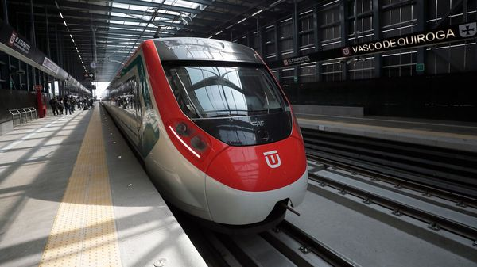
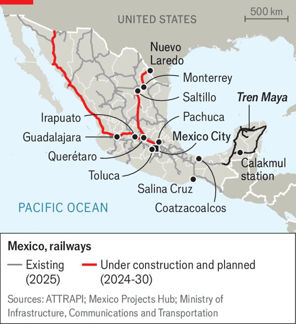

Jul 09, 2026 05:23 AM | BACALAR AND TOLUCA

GIVEN THAT its passengers are mostly heading into work, the mood aboard El Insurgente, a train linking Mexico City with nearby Toluca, is unusually upbeat. Since it began running in February, Mexicans have enjoyed a smooth ride in sleek trains across one of the world’s most clogged and sprawling urban areas. It’s “wonderful” to avoid traffic, says one customer. On a bad day the journey between Toluca and the Mexican capital, barely 60km (40 miles) apart, can take several hours by road. El Insurgente takes about an hour and costs under $6.
Claudia Sheinbaum, Mexico’s president, wants more of this. She has ambitious plans to build more than 3,000km of new passenger rail before the end of her term in 2030. Many countries, such as China and Turkey, are making big bets on trains. But Mexico’s dreams are “dramatic”, says Andrew Young, a rail analyst. Mexico is starting more or less from scratch, in a region not known for trains, and building with speed, he says.
Mexico once had a passable passenger network. By the 1990s, however, the rail system was deteriorating and the government privatised it. The concessions that followed focused mainly on freight. These have been useful: trains play an important part in North America’s supply chains, hauling cars, grain, fuel and manufactured goods between ports, factories and the American border. But passenger services all but vanished.
Recent efforts to revive passenger trains have been fraught with controversy—in large part because they started with a dud. Tren Maya, a pet project of Ms Sheinbaum’s predecessor, Andrés Manuel López Obrador, runs for 1,500km around the Yucatán peninsula in the south-east. It has caused huge environmental damage and its planning was influenced by political considerations. Stations were built in inconvenient locations without good connecting transport. “We have not seen the benefits we were told we would,” says a tour guide in Calakmul, one of the stations that bears the name of a nearby archaeological site.

Ms Sheinbaum’s plans have more rigour. Andrés Lajous, the official in charge, says the idea is to connect contiguous metropolitan areas: from Mexico City to Pachuca and Querétaro, then on towards Irapuato and Guadalajara, and from Saltillo through Monterrey towards Nuevo Laredo (see map). These lines will connect cities that are slow to drive between but too close for flying to be sensible. Planned and built properly, they could save people time, cut pollution and spur economic growth. They could also stem urban sprawl, since rail makes it easier for people to live in one town while holding down jobs in another.
The idea is for the passenger lines to be built alongside existing freight ones, meaning the right of way is already mostly secured. (They will avoid running them on the same tracks, which can clog up the lines and limit speeds, as tends to happen in the United States.) The government is moving fast: it recently inaugurated a line to Felipe Ángeles airport, north of Mexico City, and has begun work on others to Pachuca and Querétaro.
But to reach its destination the government will have to confront several challenges. One is whether there will really be enough cash. Passenger rail almost always requires public money: both to build it, and then to keep fares affordable. (Only a handful of high-density routes worldwide, such as Paris to Lyon and Tokyo to Osaka, are profitable.) Mexico has shallow coffers and many other needs. Oscar Ocampo of IMCO, a think-tank in Mexico City, reckons that only some of Ms Sheinbaum’s proposed lines make obvious sense (such as Mexico City to Querétaro, and Saltillo to Monterrey). The case for others is “not so clear”. Some of the money would be better spent further improving things such as freight rail, ports and industrial-corridor connections, he says.
A second question is whether Mexico’s government intends to do far too much of the work itself. Mr López Obrador’s administration put the state—and the army—at the centre of infrastructure delivery, keeping private firms at arm’s length. Ms Sheinbaum has recognised that she must be less dogmatic. The state will lead the rail roll-out and operate the train services (not uncommon globally for big rail projects). The idea is that private companies will build substantial portions of the infrastructure. Big tenders are going out for stations, bridges, signalling, electrification and more. But keeping a correct balance may be difficult.
Last, Ms Sheinbaum will have to resist the temptation to prioritise speed over quality during development. Services along the Interoceanic railway—another of her predecessor’s projects, linking the port of Coatzacoalcos on the Gulf of Mexico with Salina Cruz on the Pacific coast—have been suspended since a train derailed in December, killing 14 people. Swift, efficient travel is worth investing in. So is arriving in one piece. ■
Sign up to El Boletín, our subscriber-only newsletter on Latin America, to understand the forces shaping a fascinating and complex region.